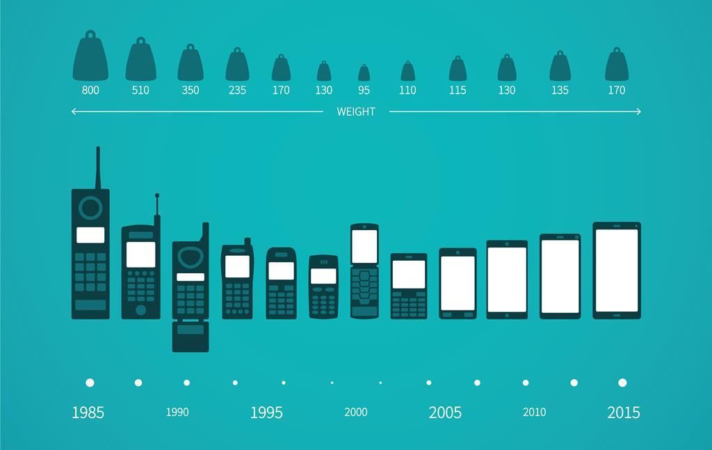

“Smartphone Revolution” has completely changed the personal communication use to take place
Martin Cooper was the man behind this tiny invention. In 1973 Martin made the first phone
call from the world’s first mobile phone. It was a clear signal that the world is going to
be globalized soon and the process of communication in upcoming century will shape the whole
universe.
During World War I, the German army used field telephone to stay in contact
with its military officials. This use proved very significant during the course of WWI and
stressed the alternative functions of mobile phone. In 1989, Motorola introduced the Micro
T-AC personal telephone; its antennas could be pulled open to use it as a telephone and the
flip-down was used as the mobile phone. After this in 1997, Philips Consumer Communications
introduced the new digital smart phone “Sayngry”, which had additional specifications
including mobile e-mail, Internet and wireless fax etc. Danger Hip Top was another
smartphone introduced in 2002 with e-mail, SMS features, but this time the
“Personal Assistance” apps e.g. digital cameras and video games were also introduced.
This phone with flip-out screen and friendly keyboard made the communication more
easy and helpful.
Martin Cooper was the man behind this tiny invention. In 1973 Martin made the first phone call from the world’s first mobile phone
Steve Jobs, Apple’s Chief Executive, in 2007 launched the first Pocket PC cum iPhone during Mac World conference held in San Francisco. iPhone’s launch proved to be a great invention that actually heated up the competition between Samsung, HTC, Nokia and Sonny Ericson. The alternative benefits of mobile phone came into reality by many brands and sparked a tough competition in the market. People came closer through social media connection and many other apps as mobile became a device that serves multiple purposes. It can be rather said that mobile has played fundamental role in making the world “Global Village”.

Smartphones are everywhere. It is quite hard to imagine life without them, as software and hardware companies have worked seamlessly over the years to fit in the maximum amount of features in a small device. What we are essentially talking about here is the design change over the years that we have seen in smartphones. There has been the continuing trend where smartphone makers try to make the phone as small as possible while having the biggest display of that size.